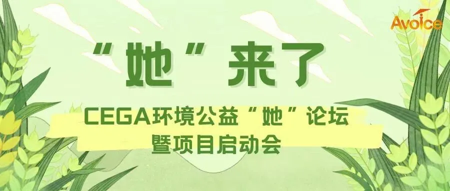

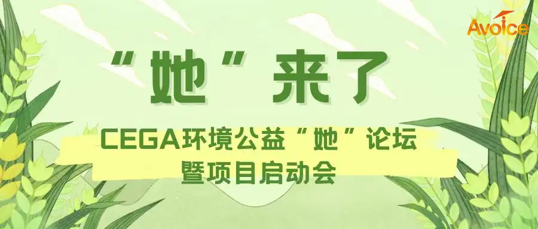

CEGA环境公益“她”论坛暨项目启动会
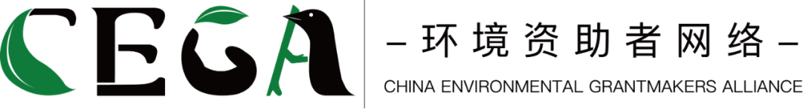
CEGA环境公益“她”项目拟包括三个版块：CEGA“她”论坛，每年6月5日环境日前后举办，从女性视角关注环境议题，赋能环境公益领域女性从业者和关注该领域的女性公益人，加强沟通与交流，培育环境公益女性领导力。CEGA“她”声音，支持国内环境领域杰出女性参加国际会议和活动，分享中国经验，传递中国声音，促进中外民间交流。CEGA“她”故事 ，编写中国环境公益领域“她”故事，通过梳理中国女性个人、机构以及专家学者在环境公益及相关交叉议题方面的实践和经验故事，总结和分析中国女性及相关机构参与推动环境与气候议题的现状、存在的问题和挑战，为机构和行业如何更好地支持环境公益女性领导力建设提供参考和建议。
值2022年世界环境日之际，我们将于6月10日（上午）举办首届CEGA环境公益“她”论坛暨CEGA环境公益“她”项目启动会（线上）。从女性视角关注环境，邀请国内国际环境公益界优秀女性分享“她”故事，和环境公益“他”代表一起探讨环境公益女性领导力以及如何通过“她”项目培育更多的优秀环境公益女性。我们还非常有幸邀请到联合国妇女署合作伙伴关系专员杨睿侃女士作为中国办公室发言代表、生态环境部宣传教育中心首席专家贾峰先生致欢迎辞，见证CEGA环境公益“她”项目正式启动。
CEGA环境公益 “她”项目得到了全体成员伙伴的支持，还得到了万科公益基金会和中国国际民间组织合作促进会的年度特别支持。在一起，了不起！
欢迎关注环境与女性发展的各界朋友参会！和我们一起探讨环境公益“她”议题，为世界环境日增添“她”色彩！
参与方式
（任选一种）
1.扫描直播二维码观看论坛
2.复制链接到浏览器填写报名信息即可观看论坛https://mudu.tv/live/watch/o6jbjk9l
欢迎您的到来！
直播时间
2022年6月10日9:30-12:00
嘉宾介绍
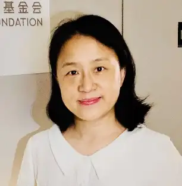
陈一梅
万科公益基金会秘书长
CEGA主席
杨睿侃
联合国妇女署合作伙伴关系专员
贾峰
生态环境部宣传教育中心首席专家
孙莉莉
阿拉善SEE生态协会第八任会长
李莹
中华女子学院国际教育学院院长
北京市妇女对外交流协会副会长
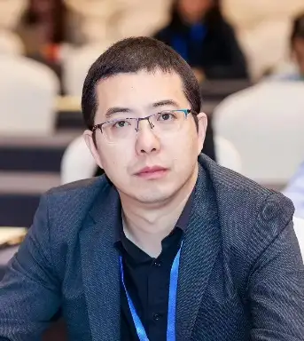
杨彪
北京市企业家环保基金会
（SEE 基金会）秘书长
王香奕
中国国际民间组织合作促进会
副理事长兼秘书长
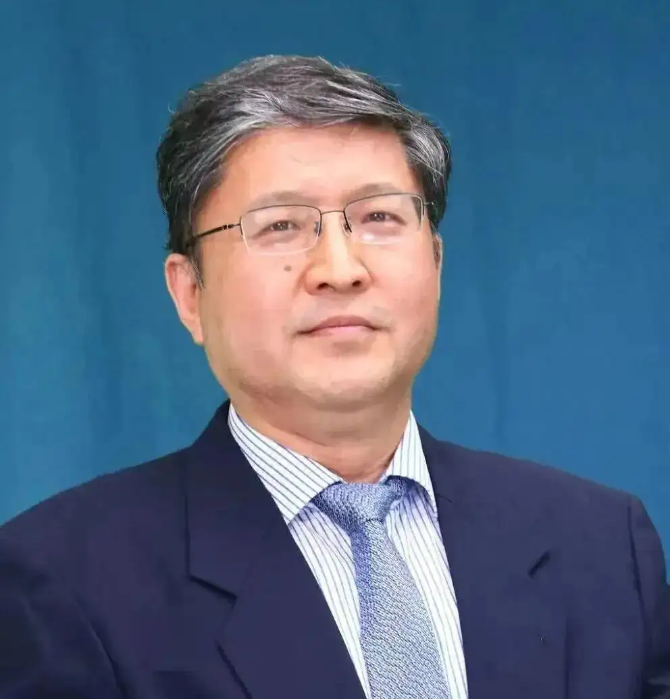
房志
中华环境保护基金会
副秘书长、正高级工程师
方莉
世界资源研究所（美国）
北京代表处首席代表
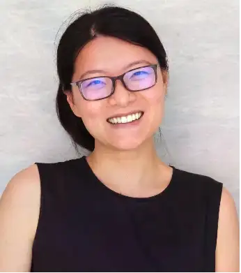
李妙婷
千禾社区公益基金会秘书长
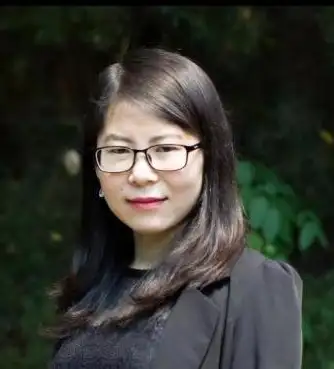
刘金梅
北京自然之友公益基金会秘书长
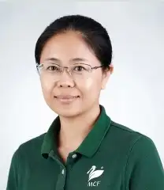
闫保华
红树林基金会（MCF）秘书长
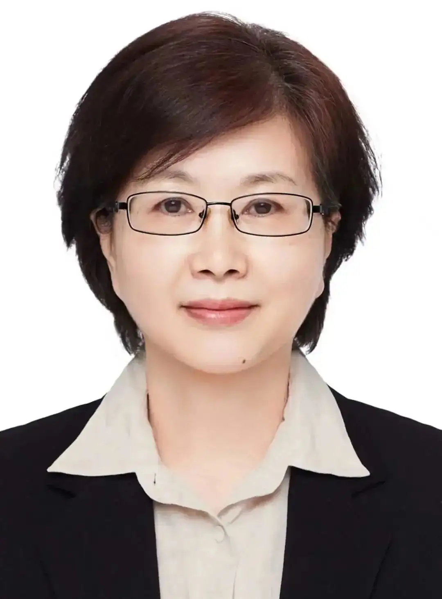
谢玉红
中华环保联合会副主席兼秘书长
安亚强
内蒙古老牛慈善基金会秘书长
CEGA主席
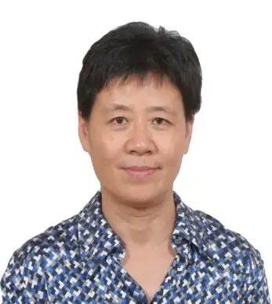
张瑞英
环境资助者网络（CEGA）执行主任
论坛主持人
主办方
环境资助者网络（CEGA）
联合主办方
中国国际民间组织合作促进会
万科公益基金会
平台支持
基金会中心网
中华环保联合会
联合传播伙伴
中国公益时报
中国网